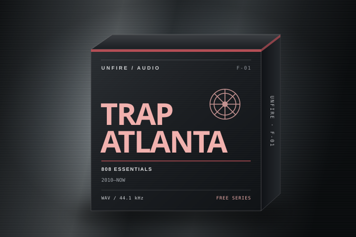

Trap & Drill / Atlanta / 2010s–2020s
Atlanta Trap — 808 Essentials
Recorded Roland TR-808 kicks, clap, rim, snares and hats with original 140 and 150 BPM rhythmic arrangements.

What is included
| Sound | BPM | Format | Provenance |
|---|---|---|---|
| 808 Kick Tight | — | one-shot / recording | Source |
| 808 Kick Long | — | one-shot / recording | Source |
| 808 Closed Hat | — | one-shot / recording | Source |
| 808 Clap | — | one-shot / recording | Source |
| 808 Rim | — | one-shot / recording | Source |
| 808 Snare | — | one-shot / recording | Source |
| 808 Open Hat | — | one-shot / recording | Source |
| Original 2-bar rhythm 1 | 140 | loop | Sources in manifest |
| Original 2-bar rhythm 2 | 150 | loop | Sources in manifest |
License and credits
CC0 1.0. Original source recordings remain CC0; Unfire arrangements and edits are CC0. Source information and SHA-256 checksums in the ZIP. No exclusive rights claimed. Style labels describe inspiration. Technical preview; artistic review ongoing.